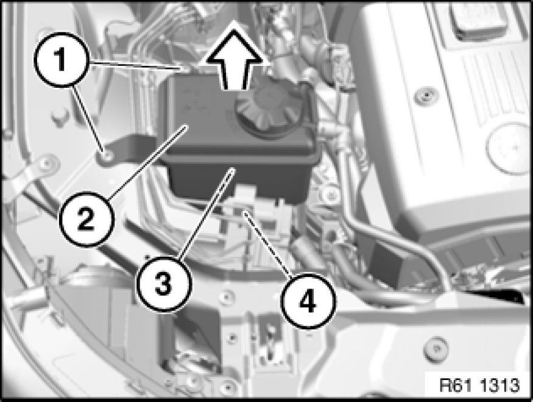
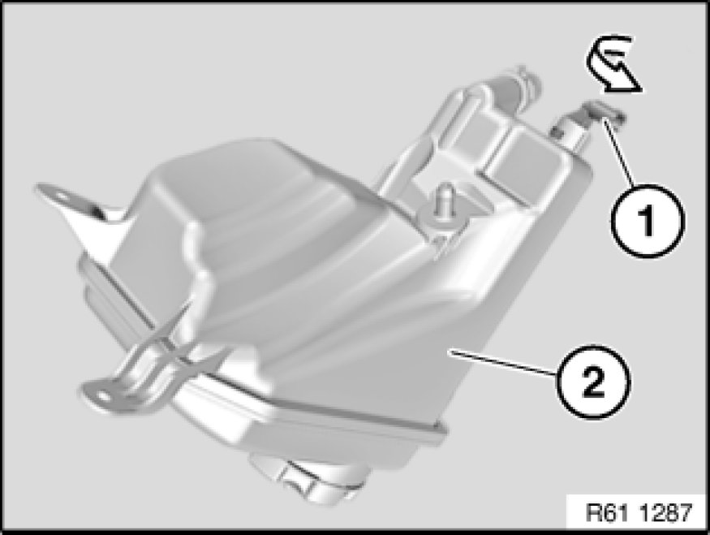

Coolant Level Sensor: Service and Repair
61 31 382 - Replacing level switch for coolant

Warning!
Danger of scalding!
Only perform this work after engine has cooled down.

Release screws (1).
Unlock plug connection for coolant level switch (4) and disconnect.
Pull coolant expansion tank (2) in direction of arrow out of grommet (3) underneath.
Installation Note:
Make sure coolant expansion tank (2) is correctly seated in grommet (3).
If necessary, replace grommet (3).
Important!
Do not damage connected water hoses.
Reposition coolant expansion tank (2) as far as possible until coolant level switch (4) forms the highest point. This will prevent coolant from escaping on opening.
If necessary, catch escaping coolant and feed back in later.

Note:
For purposes of clarity, illustration shows coolant expansion tank (2) removed.
Turn coolant level switch (1) in direction of arrow, pull upwards out of coolant expansion tank (2) and remove.